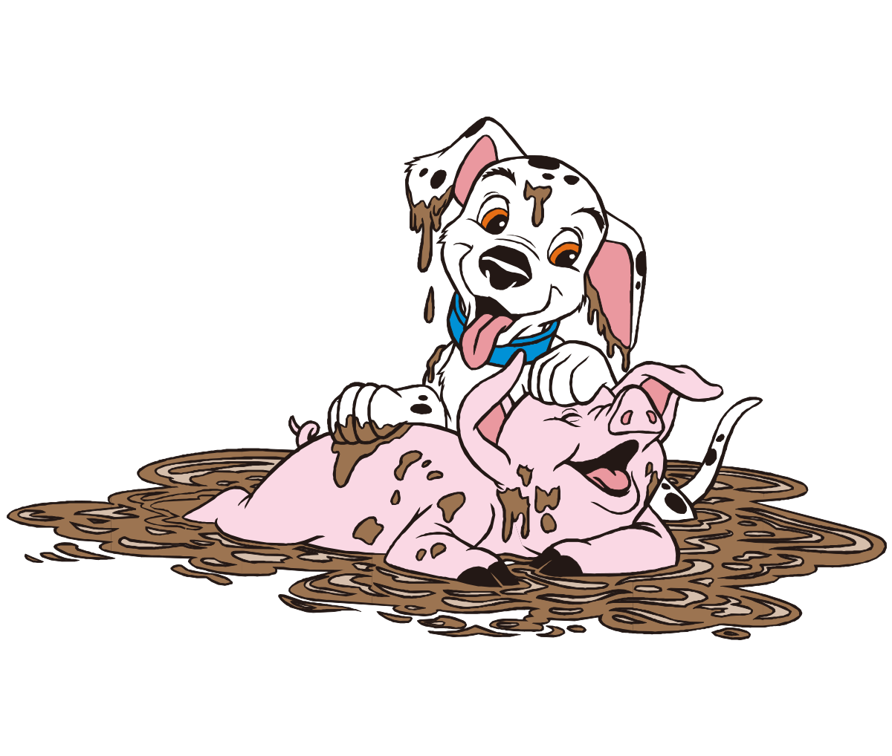

Pridružite se Jedinstvenoj Avanturi: Lov na Tartufe - Zabava za sve uzraste
Dobrodošli u jedinstveni svijet tartufarske avanture! Ovdje imate priliku zakoračiti u netaknutu prirodu i uz stručno vodstvo krenuti u lov na tartufe, jedno od najcjenjenijih i najskrivenijih blaga našeg kraja. Odaberite između različitih ruta i prilagodite svoje iskustvo prema vašim željama – bilo da ste početnik ili tražite ozbiljan izazov. U pratnji posebno obučenih pasa ili svinja, istražit ćete čari prirode dok učite o tartufima, njihovoj povijesti i tehnici pronalaska.
